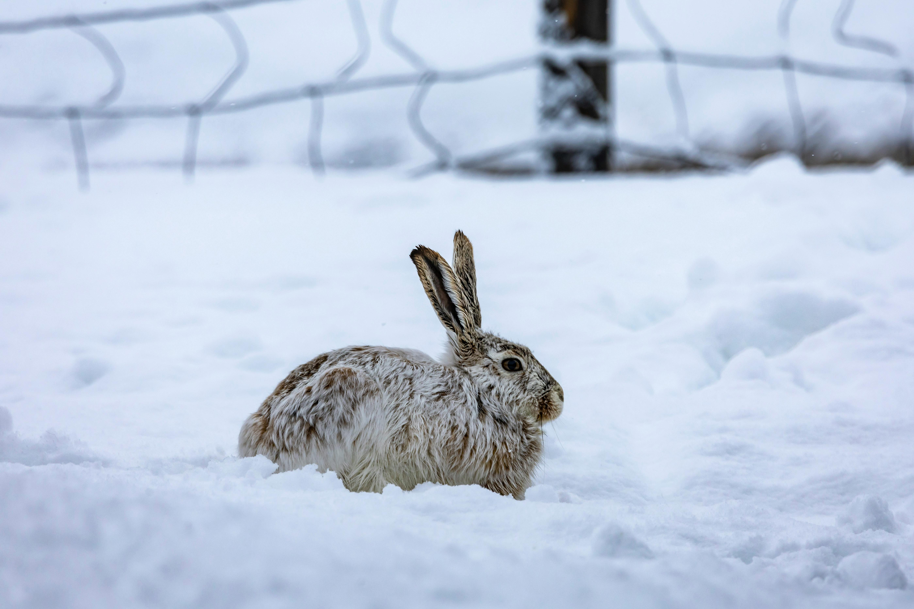
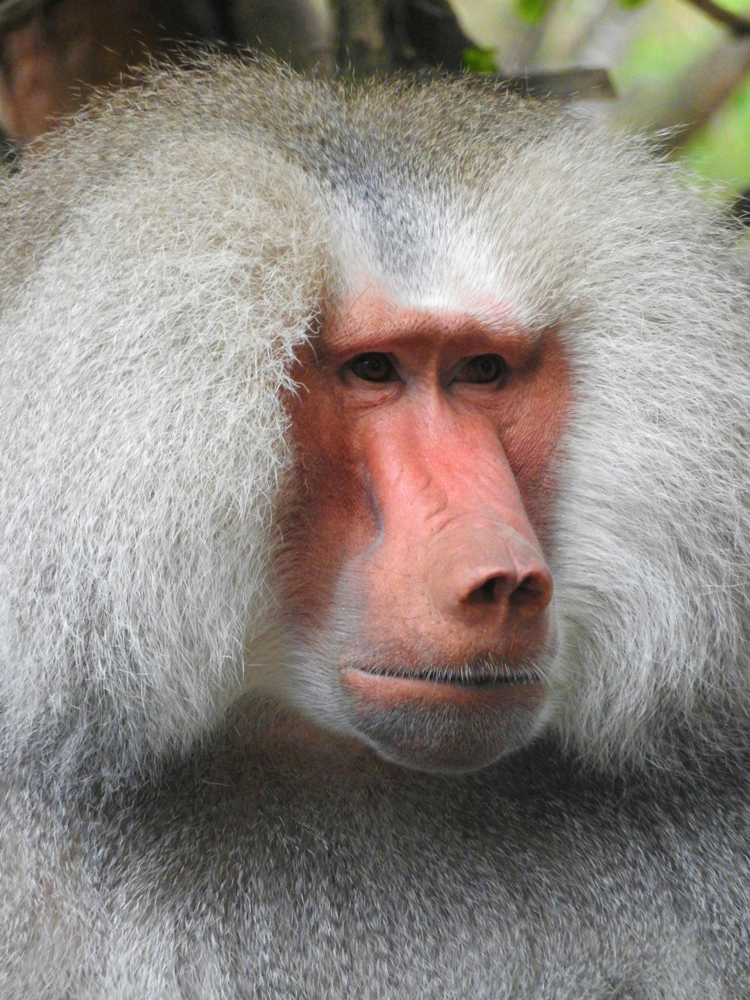

Mammals
Arctic Hare-
Arctic hares are like the snow bunnies of the North Pole — fluffy, white, and built for the cold. With their thick fur, strong legs, and cute lil' ears, they zip across icy tundras like pros. These guys can survive crazy freezing temps and are total masters of hide-and-seek in the snow. Absolute winter warriors in bunny form.
Baboon-
Baboons are the sassiest squad in the monkey world — loud, bold, and always causing a ruckus. They’ve got strong jaws, big ol’ butts (yeah, you know the ones), and major squad goals vibes with their tight family groups. Super smart, super social, and not afraid to steal your snacks. Total jungle drama queens.
Bottlenose Dolphin-
Bottlenose dolphins are the ocean’s smooth-talking, flip-happy BFFs. They’re super smart, always down to play, and rock that permanent smile like absolute icons. With sleek gray bodies and big brain energy, they surf waves, chat in clicks, and vibe hard with their pod. Basically, the life of the underwater party.

Bird
Penguine-
Penguins are fascinating flightless birds that live primarily in the Southern Hemisphere. They are excellent swimmers, using their flippers to glide through the water in search of fish, squid, and krill. The largest species is the emperor penguin, which can grow up to 1.1 meters (3 feet 7 inches) tall and weigh around 35 kg (77 lbs)